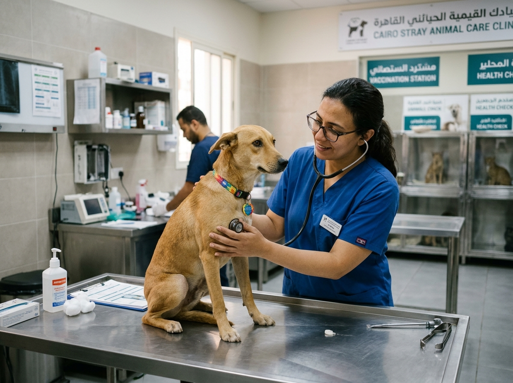

المنظومة الرقمية الموحدة لتنسيق عمليات الإنقاذ الميداني، توثيق البلاغات، وإدارة ملاذات الإيواء في نطاق (شبرامنت، سقارة، وطريق مصر إسكندرية الصحراوي). نربط بلاغات المواطنين بفرق الاستجابة السريعة والعيادات المتنقلة على مدار 24 ساعة لوقف التسميم والتخلص غير الإنساني.
بيانات حية موثقة من سجلات التدخل الميداني، العيادات البيطرية، ومراكز الإيواء والتأهيل.
كلب تم إنقاذه وإسعافه
حالات حوادث طرق وإصابات تم التعامل معها بالقاهرة
عملية تعقيم وتطعيم (TNR)
للحد الإنساني المستدام من التكاثر ومكافحة السعار
حالة تبنٍ ناجحة
كلاب مؤهلة سلوكياً وجدت عائلات محبة ومسؤولة
متطوع وطبيب بيطري
يشاركون في الحملات الميدانية وأيام التوعية والرعاية
تأسس مأوى القاهرة للكلاب الضالة كاستجابة إنسانية ملحة لمعاناة آلاف الكلاب في شوارع القاهرة والجيزة؛ حيث كانت تواجه حوادث السير، التسميم العشوائي، وظروف الطقس القاسية. بدأنا بجهود تطوعية متواضعة على حواف شبرامنت وطريق سقارة السياحي لإنقاذ الحالات الحرجة.
واليوم، تحول المشروع إلى نظام رقمي لإدارة المأوى (Digital Shelter Management System) يربط بين المواطنين المبلغين، فرق الاستجابة الميدانية، والعيادات البيطرية المتطورة. نؤمن بأن الحيوان كائن يستحق الرحمة والحماية، وأن التوازن البيئي في القاهرة يتحقق بالعلم والتعقيم لا بالإبادة.
قاهرة حضارية آمنة للمواطن ورحيمة بالحيوان، تختفي فيها ظاهرة الكلاب المشردة دون استخدام السموم، وتتحول إلى مجتمع يُقدّر الرفق بالحيوان.
تطبيق البرنامج الوطني المعتمد علمياً (TNR: صيد، تعقيم، تطعيم، وإطلاق)، وتوفير ملاذات طبيعية مفتوحة للحالات غير القادرة على العيش بالشوارع.

15 فداناً مهيأة بحظائر شمسية، عيادة جراحية، وملاعب تدريب سلوكي
نعمل وفق خطة علمية متناسقة تغطي مختلف مناطق القاهرة الكبرى والجيزة، من الإنقاذ الأولي وحتى التبني أو الإطلاق الآمن.
أسطول سيارات إنقاذ مجهزة بأقفاص آمنة ومعدات إسعاف بيطري أولي، مخصصة لحالات حوادث الطرق والكسور والإصابات الخطرة بجميع أحياء القاهرة.
الحل الإنساني الوحيد المثبت عالمياً للحد من تكاثر الكلاب: صيد رحيم، تعقيم جراحي معقم، تطعيم شامل ضد السعار مع وضع علامة أذن موحدة (Ear Notch).
مأوى شبرامنت وسقارة المفتوح للحالات ذات الإعاقة الدائمة، كبار السن، والجراء اليتيمة. مساحات ترابية ورملية مفتوحة تساعد الحيوان على استعادة فطرته الآمنة.
نظام فحص وتوفيق بين العائلات والكلاب المؤهلة بعد فحص بيطري وتطعيمات كاملة، مع متابعة دورية وتقديم استشارات تدريبية مجانية لضمان استقرار الحالة.
حملات ميدانية أسبوعية في المناطق ذات الكثافة العالية (المعادي، التجمع، حلوان، الجيزة) لتقديم التطعيم ضد السعار وعلاج الأمراض الجلدية في موقعها.
ورش عمل في مدارس وجامعات القاهرة لتعليم الأطفال والشباب كيفية التعامل الآمن مع كلاب الشارع، تفادي العض، وفهم لغة جسد الحيوان ونشر ثقافة الرحمة.
تابع تحركات سيارات الإسعاف البيطري، مواقع البلاغات العاجلة، وحملات التعقيم والتطعيم (TNR) الجارية لحظياً. انقر على أي موقع للانتقال إليه واستعراض تفاصيل الحالة.